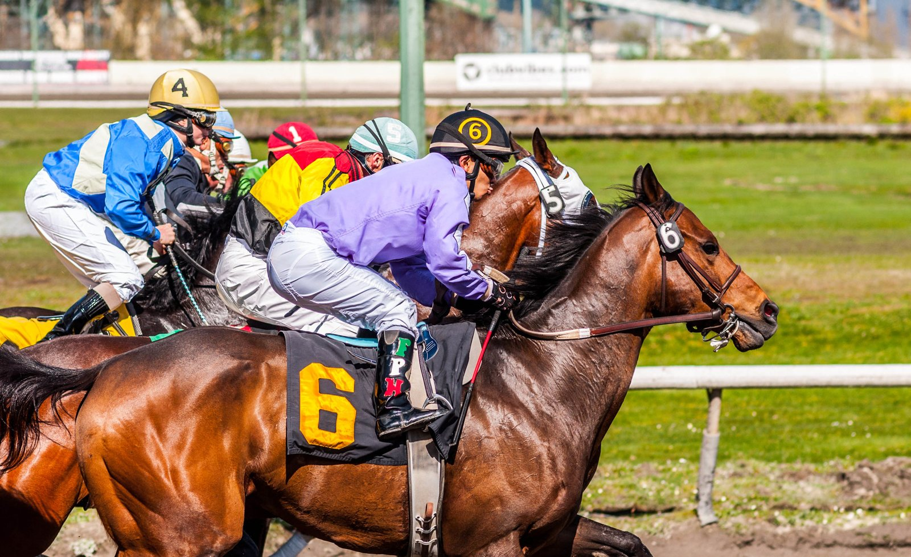

Kalpana busca en Ascot su tercera Fillies & Mares, trece días después del Arc
Andrew Balding repite con Kalpana la receta del año pasado: del Prix de l'Arc de Triomphe a la Qatar Racing British Champions Fillies & Mares Stakes de Ascot, con el triplete en juego este sábado.

El calendario vuelve a ser el mismo. Hace un año, Kalpana llegó al Grupo I de Ascot trece días después de terminar séptima en el Arc, y ganó. Esta vez fue quinta en París, y el margen hasta el sábado vuelve a ser de trece días.
La yegua de cinco años regresa así a la pista donde ya ha ganado dos veces, y Andrew Balding prefiere no hacerse ilusiones. "Probablemente dije lo mismo el año pasado, pero es una lectura bastante difícil cuando estás tan cerca, trece días después", admitió el preparador.
Las dudas no se quedan en el poco descanso. Al recelo por la recuperación se suman el cajón número uno en el partidor y la presencia de la generación clásica, las yeguas de tres años que se miden a las mayores.
Las señales desde Kingsclere, donde Kalpana trabaja desde su vuelta de Francia, sí le han dado motivos para el optimismo. "Hemos seguido exactamente el mismo programa que el año pasado. El miércoles galopó en pareja, se la vio bien, ha comido bien y se la ve bien de ánimo", explicó Balding. Y matizó: "Estoy adivinando un poco, pero parece que ha salido de Francia realmente bien".
El preparador busca además su primer campeonato de entrenadores, y confía en que Kalpana vuelva a responder en el Champions Day.
Más allá de lo que esté en juego el sábado, Balding no oculta el lugar que ocupa la yegua en su cuadra. La comparó con Alcohol Free, otra de las grandes que ha pasado por sus manos. "Probablemente es mi favorita. Ha sido una alegría tenerla en la cuadra durante tanto tiempo", dijo. "Alcohol Free ganó cuatro Grupos I, fue extraordinaria, pero de Kalpana estamos muy orgullosos por lo que ha conseguido y le tenemos muchísimo cariño".
Por Martín Larrañeta